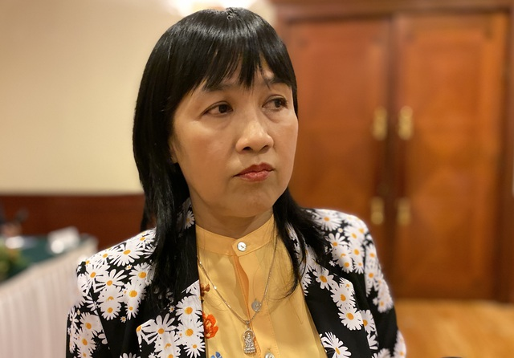
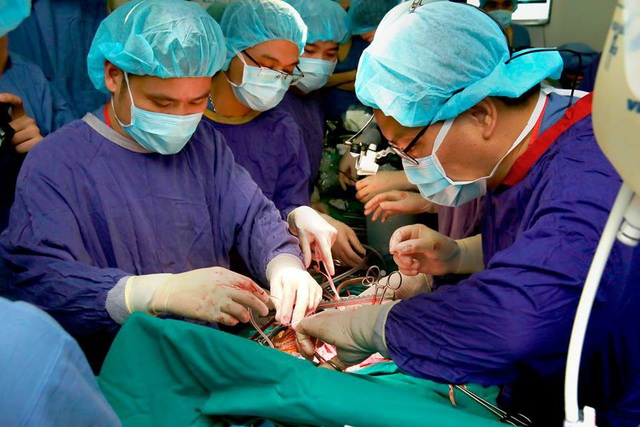

Dân trí Người em trai mắc bệnh cơ tim giãn, có chỉ định ghép tim. Người anh không may bị chết não, sau 1 tuần vận động, các y bác sĩ không thể thuyết phục được gia đình đồng ý lấy tạng của anh để ghép cho em.
Câu chuyện được ThS.BS Trần Thị Cẩm Tú, Phó giám đốc Trung tâm Ghép tạng, Bệnh viện Đa khoa Trung ương Huế chia sẻ bên lề hội thảo đánh giá bất cập của pháp luật về hiến, lấy ghép mô, tạng, bộ phận cơ thể người và hiến, lấy xác diễn ra tại Hà Nội sáng 10/11.
Trường hợp trên xảy ra cách đây một năm. Khi đó, người em trai 35 tuổi, mắc bệnh cơ tim giãn, có chỉ định ghép tim. Người anh trai, 43 tuổi, đã lập gia đình. Sau đó, người anh không may gặp tai nạn bị chết não. Với mong muốn cứu người em, các y bác sĩ đã thuyết phục, vận động gia đình hiến tạng của người anh.
“Người bố khi đó đứng giữa 2 con, sau khi được thuyết phục cũng đồng ý hiến tạng, tuy nhiên người con dâu lại không đồng ý nên dù rất tiếc chúng tôi cũng không thể làm được gì. Không được ghép tim, bệnh nhân sẽ phải dùng thuốc và cuộc sống sẽ rất ngắn”, BS Tú chia sẻ.
ThS.BS Trần Thị Cẩm Tú, Phó giám đốc Trung tâm Ghép tạng, Bệnh viện Đa khoa Trung ương Huế.
Bản thân bác sĩ khi đó cũng đã gặp người em và đề nghị thuyết phục chị dâu tuy nhiên anh không đồng ý. “Khi chị dâu không đồng ý, thực sự tôi cũng không muốn nhận. Nếu tôi nhận thì tôi là người ích kỷ. Tôi chấp nhận cái chết, chứ không muốn thuyết phục chị dâu”, là những chia sẻ của bệnh nhân.
Trước đó, bác sĩ Tú cũng gặp một trường hợp mới 24 tuổi, không may bị chết não. Sau khi được vận động, hầu hết mọi người trong gia đình đều đồng ý hiến tạng nhưng bà nội không đồng ý.
“Chỉ cần một thành viên trong gia đình không đồng ý, chúng tôi không thể lấy tạng. Việc vận động hiến mô tạng rất khó khăn. Người dân quan niệm chết phải chôn, phải toàn thây, phải có nấm mồ chứ không thiêu”, BS Tú nhấn mạnh.
Cũng vì thế, Bệnh viện Đa khoa Trung ương Huế lần đầu thực hiện ca ghép tạng là vào năm 2001. Tuy nhiên, đến nay Bệnh viện mới thực hiện được 6 ca ghép tạng từ người cho chết não, trong đó có đến 5 ca là do Trung tâm Điều phối Quốc gia về ghép bộ phận cơ thể người vận chuyển tạng xuyên Việt.
Theo BS Tú rất khó để thay đổi được vấn đề nhận thức, tâm linh. Trung bình mỗi ngày tại Bệnh viện Đa khoa Trung ương Huế có 1 trường hợp không may bị chết não, chủ yếu do tai nạn giao thông.
BS Tú đề xuất cần thay đổi một số điều trong luật, chẳng hạn chỉ cần một đại diện hợp pháp của người chết não đồng ý là có thể lấy tạng thay vì rất nhiều người như hiện nay. Ngoài ra cũng nên có một khoản chi phí hợp pháp, khoản hồi phục sức khỏe cho người hiến tạng, từ đó sẽ hạn chế được việc mua bán tạng.
PGS.TS Đồng Văn Hệ, Bệnh viện Hữu nghị Việt Đức (Hà Nội) cũng nêu lên một số bất cập như theo quy định chỉ được lấy mô, tạng từ người chết não nếu họ có thẻ đăng ký hiến mô tạng từ trước khi chết não. Điều này gây khó khăn cho việc lấy tạng nếu người chưa có thẻ hiến không may chết não dù gia đình đồng ý hiến. Đến nay mới chỉ có gần 40.000 người có thẻ hiến. Thực tế những người hiến chưa chắc đã là người có thẻ. Những người đã có thẻ không may chết não để lấy tạng được, các cơ sở vẫn phải được sự đồng ý của gia đình.
Một ca ghép tạng được thực hiện tại Bệnh viện Việt Đức.
Ngoài ra, luật quy định người trên 18 tuổi được phép hiến tạng. Theo đó, trẻ em chết não không được hiến tạng. Vậy với những trẻ em không may chết não, bố mẹ đồng ý hiến thì sẽ giải quyết như thế nào. Những vấn đề về chi phí liên quan cũng gây khó khăn nhiều cho hoạt động của các cơ sở ghép tạng.
TS Nguyễn Huy Quang, Vụ trưởng Vụ Pháp chế, Bộ Y tế cho biết tại nước ta hiện nay nguồn tạng chủ yếu lấy từ người cho sống. Tỷ lệ người chết não được gia đình đồng ý cho tạng ở mức rất thấp, 0,1 trên 1 triệu trong khi ở các quốc gia phát triển như Tây Ban Nha, Bộ Đào Nha tỷ lệ này là 50 người trên 1 triệu người.
Vì thế, muốn lấy nguồn tạng từ người cho chết não thì cần phải có chiến dịch vận động lớn để truyền thông thay đổi nhận thức. Nét đặc trưng của văn hóa Á Đông là quan niệm chết phải toàn thây.
Với trường hợp cho tạng là người cho sống hiện cũng gặp một số khó khăn. Ví dụ với người cho sống yêu cầu là cùng huyết thống, vậy một người ở Yên Bái, một người ở Cà Mau vẫn khai cùng huyết thống thì xác định thế nào là cùng huyết thống...
Về vấn nạn cò mồi, buôn bán tạng, TS Quang thừa nhận vấn đề này có hiện hữu tại nước ta. Thời gian qua công an đã bắt 12 trường hợp và đang xử lý. Bộ Công an cũng đã có văn bản đề nghị Bộ Y tế quan tâm để hạn chế tối đa việc mua bán bộ phận cơ thể người, kể cả buôn bán mô tinh trùng, noãn, phôi.
Bên cạnh đó, TS Quang đề xuất cần tăng cường lấy tạng người cho chết thay vì người cho sống như hiện nay, tăng cường điều phối nguồn tạng giữa các cơ sở...